Für Dach- und Holzbauarbeiten müssen Arbeitsplätze so eingerichtet und beschaffen sein, dass sie entsprechend
ein sicheres Arbeiten gwährleisten.
Siehe § 7 der DGUV Vorschrift 38/39 "Bauarbeiten"
Gefahren durch Witterungseinflüsse können z. B. auftreten bei Regen, Wind, Raureif, Vereisung, Schnee,Sonne, Hitze.
Werden Stand- oder Hängegerüste als Arbeitsplätze verwendet, müssen diese mindestens der Lastklasse 3 (2,0 kN/m²) und der Breitenklasse W 06 nach DIN EN 12811-1 entsprechen.
Siehe
Werden Aufzüge oder andere Ergänzungsbauteile wie z. B. Schuttrutschen an Gerüsten angebaut, ist dies mit dem Gerüstersteller abzusprechen und die Ableitung der zusätzlich auftretenden Kräfte ggf. gesondert statisch nachzuweisen.
Wird ein Umsetzen oder Entfernen von Gerüstankern erforderlich, ist hiermit rechtzeitig der Gerüstersteller zu beauftragen oder dieses mit dem Gerüstersteller abzustimmen.
Fahrbare Gerüste sind Gerüste nach DIN 4420-3, die auf Fahrrollen stehen und verfahren werden können. Fahrbare Gerüste können z. B. aus Gerüstrohren und Kupplungen oder aus Systemgerüstbauteilen erstellt werden.
DIN 4420-3 Arbeits- und Schutzgerüste, Schutzgerüste – Teil 3: Ausgewählte Gerüstbauarten und ihre Regelausführungen.
Werden Fahrbare Arbeitsbühnen nach DIN EN 1004 verwendet, dürfen diese im Freien nur bis 8 m, in geschlossenen Räumen nur bis 12 m Aufbauhöhe eingesetzt werden. Die Aufbau- und Verwendungsanleitung des Herstellers ist zu beachten, die am Montageort vorliegen muss.
Hinweis:
Fahrgerüste sind fahrbare Konstruktionen. Nach ihrer Ausführungsart sind Fahrgerüste
in Fahrbare Gerüste und Fahrbare Arbeitsbühnen zu unterscheiden.
Die Verwendung von Leitern als hoch gelegene Arbeitsplätze ist nur in solchen Fällen zulässig, in denen
| a. | wegen der geringen Gefährdung und wegen der geringen Dauer der Verwendung die Verwendung anderer, sichererer Arbeitsmittel nicht verhältnismäßig ist und |
| b. | die Gefährdungsbeurteilung ergibt, dass die Arbeiten sicher durchgeführt werden können. |
Sichere Arbeitsmittel können z. B. sein
Siehe auch Betriebssicherheitsverordnung, Anhang 1, Nr. 3.1.4
Es dürfen nur solche Leitern zur Verfügung gestellt werden, die nach ihrer Bauart für die jeweils auszuführenden Arbeiten geeignet sind.
Während der Benutzung muss die Leiter standsicher aufgestellt sein und ggf. gegen Umstürzen gesichert werden. Sie muss sicher begehbar aufgestellt sein, so dass die Beschäftigten jederzeit sicher stehen und sich festhalten können. Podestleitern sind Anlegeleitern vorzuziehen.
Siehe
Der Unternehmer hat für Arbeitsplätze auf Dachflächen geeignete Arbeitsmittel nach Tabelle 2 zur Verfügung zu stellen.
Siehe
Tabelle 2 Arbeitsplätze auf Dachflächen
| Ort/Art der Tätigkeit | I | II | III | IV | |
|---|---|---|---|---|---|
| Arbeitsplätze bei Dachneigungen von | |||||
| ≤ 22,5° ° | > 22,5° ° ≤ 45 ° | > 45 ° ≤ 60 ° | > 60 ° | ||
| A | Aufrichten von Dachstühlen | 1/4/5/9 | 1/4/5/9 | 4/5/9 | 4/5/9 |
| B | Dachlatten nach Abschnitt 3.1.7 | 1 | 1 | 1/4 | 1/4 |
| C | Schalung | 1 | 1/2/8/** | 2/3/8 | 2/4/5 |
| D | Dachdeckungen | 1 | 2/3/8/** | 2/3 | 2/4/5 |
| E | Dachabdichtung | 1 | 2/3/4/** | 2/3/4 | 2/4/5/7 |
| F | Metallfläche | 1 | 2/3/4 | 2/3/4 | 2/4/5 |
| G | Dachrinnenmontage, Ortgangbekleidung | 4/5/9 | 4/5/9 | 4/5/9 | 4/5/9 |
| H | Dachrinnenreinigung | 1 | 4/5/6/9 | 4/5/6/9 | 4/5/6/9 |
| I | Abbrucharbeiten | 1 | 2/3* | 2/3* | 2/4/5 |
| * | bei Dachdeckungsprodukten aus nicht durchsturzsicheren Bauteilen, wie z. B. Faserzement-Wellplatten, alte Dacheindeckungen oder Dachlatten, die nicht den Anforderungen der Tabelle 3 entsprechen. |
| ** | bei rauen Oberflächen und Dachdeckungen, die eine ausreichende Standsicherheit gewährleisten, darf auf einen besonderen Arbeitsplatz verzichtet werden |
Werden gelattete Dachflächen als Arbeitsplätze verwendet, müssen die Dachlatten mindestens der Sortierklasse S10TS DIN 4074-1 entsprechen und als Verpackungseinheit (Bündel mit max. 12 Dachlatten) mit dem CE-Zeichen gemäß DIN EN 14081-1 gekennzeichnet sein. Der Lattenquerschnitt ist in Abhängigkeit von der Stützweite nach Tabelle 3 zu wählen. Dachlatten müssen entsprechend der Sortierklasse an einer Stirnseite farbig markiert sein.
Siehe VOB Teil C DIN 18334 "Tabelle 1 – Dachlatten, Nennquerschnitte, Auflagerabstände, Sortierklassen"
Der Anwender (z. B. Dachdecker, Zimmerer) muss den Hersteller bzw. Lieferanten der Dachlatten nachvollziehbar identifizieren können. Dabei sind auch die Regelungen bezüglich der Begleitdokumente und der Leistungserklärung nach DIN EN 14081-1 zu beachten.
Latten, die eine CE-Kennzeichnung ausschließlich mit der Festigkeitsklasse C 24 nach DIN 338 aufweisen, also keinen weiteren Verweis auf die Sortierklasse S 10 nach DIN 4074-1 haben, dürfen als Dachlatten nicht verwendet werden. Die für die Festigkeitsklasse C 24 angesetzte Biegefestigkeit erfüllt allein nicht die notwendigen spezifischen Lastannahmen für Arbeitsplätze auf Dächern.
Abb. 2 CE Kennzeichnung
Sollen Dachlatten verwendet werden, die nicht den Parametern nach Tabelle 3 entsprechen, sind diese nach Eurocode 5 DIN EN 1995-1-1 zu bemessen.
Dachlattenstöße lassen sich durch eine konstruktive Schrägnagelung in einem Winkel von etwa 20° ausbilden.
Tabelle 3 Regelquerschnitte für tragende Dachlatten ohne rechnerischen Nachweis aus Nadelholz
| Nennquerschnitt (mm) |
Auflagerabstand Achsmaß (m) |
Sortierklasse nach DIN 4074-1 * |
farbliche Kennzeichnung |
|---|---|---|---|
| * | Abweichungen von den Nennquerschnitten dürfen nach DIN EN 336:1995-04 höchstens -1/+3 mm betragen (bezogen auf u = 20 % Holzfeuchte) | ||
| 30 / 50 | bis 0,80 | S 10 TS | rot |
| 40 / 60 | bis 1,00 | S 10 TS | rot |
Wärmedämmende Unterdeckplatten dürfen als Arbeitsplatz nur verwendet werden, wenn sie vom Hersteller als begehbar und durchsturzsicher gekennzeichnet sind, im Allgemeinen gelten sie jedoch als "nicht durchsturzsicher", siehe Abschnitt 4.
Auf geneigten Flächen, auf denen die Gefahr des Abrutschens besteht, darf nur gearbeitet werden, nachdem Maßnahmen gegen das Abrutschen vom Arbeitsplatz getroffen wurden. Hierzu können Dachdecker-Auflegeleitern nach Anhang 1 nur bei Dachneigungen bis 75° verwendet werden. Dabei sind diese in Sicherheitsdachhaken nach DIN EN 517 einzuhängen. Sie dürfen nicht in die oberste Sprosse eingehängt werden. Der Standplatz des Beschäftigten auf der Dachdecker-Auflegeleiter muss unterhalb des Aufhängepunktes liegen.
Dachdeckerstühle nach Anhang 2 sind mit mindestens dreilitzigem Polyamidseil nach DIN EN ISO 1140:2012-11 mit 16 mm Seildurchmesser an Sicherheitsdachhaken nach DIN EN 517 zu befestigen. Der Abstand der Dachdeckerstühle (Belagträger) nebeneinander darf höchstens 2,50 m betragen.
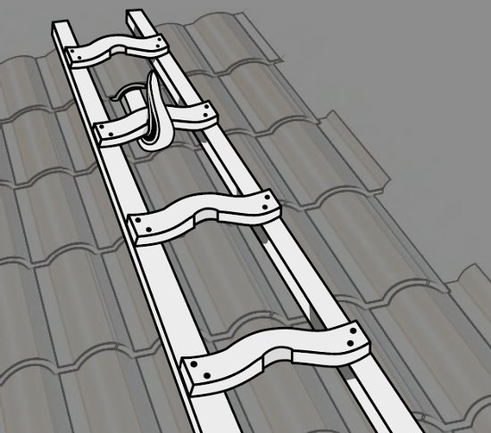
Abb. 3 Dachdecker-Auflegeleiter
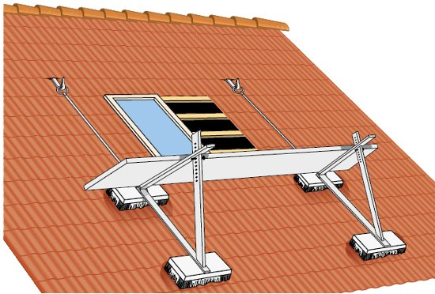
Abb. 4 Dachdeckerstuhl
Als Belag ist mindestens eine Gerüstbohle 4,5 cm x 24 cm Sortierklasse S10 nach DIN 4074-1 zu verwenden. Der Belag darf höchstens mit 150 kg belastet werden. Absturzsicherungen sind nach Abschnitt 3.3 auszuführen, das Anbringen von Seitenschutz ist aus Gründen der Standsicherheit nicht zulässig.
Eingebaute Sicherheitsdachhaken und Haken alter Bauart, die nicht DIN EN 517 entsprechen, dürfen verwendet werden, wenn diese vor der Benutzung durch den Vorgesetzten nach Abschnitt 2.3.1 oder einen Sachkundigen auf die ausreichende Tragfähigkeit überprüft wurden (siehe Abschnitt 3.3.5).
Sachkundig ist, wer die erforderlichen Kenntnisse über die regelmäßige Überprüfung der Anschlageinrichtungen hat und wer über Kenntnisse der Herstelleranleitungen, die für die jeweilige Anschlageinrichtungen gelten, verfügt.
Siehe
Verkehrswege zum Erreichen von Arbeitsplätzen bei Dach- und Holzbauarbeiten müssen sicher begehbar sein.
Siehe § 10 Abs. 1 der DGUV Vorschrift 38/39 "Bauarbeiten"
Sicher begehbar sind Verkehrswege, wenn
Gelattete Dachflächen bis zu einer Neigung von 75° für Dachziegel- oder Dachsteindeckungen nach Abschnitt 3.1.7 gelten als sicher begehbar.
Zugänge zu Arbeitsplätzen müssen als Treppen, Laufstege oder Aufzüge ausgeführt sein.
Werden Laufstege als Verkehrswege verwendet, müssen diese mindestens 0,50 m breit sein.
Als Zugänge zu hochgelegenen Arbeitsplätzen auf Gerüsten eignen sich Aufzüge, Transportbühnen, Treppen oder Leitern.
Aufzüge, Transportbühnen oder Treppen sollten z. B. als Zugang zu Arbeitsplätzen auf Arbeits- und Schutzgerüsten während der Benutzung verwendet werden, wenn
Zu den umfangreichen Arbeiten zählen z. B.
Sind Aufzüge, Transportbühnen oder Treppen aufgrund der baulichen Gegebenheiten oder aufgrund der Gerüstkonstruktion nicht einsetzbar, können an deren Stelle Leitern verwendet werden.
Bauliche Gegebenheiten, die den Einsatz von Leitern erforderlich machen, können z. B. sein:
Siehe
Anlegeleitern dürfen als Aufstiege verwendet werden, wenn
Siehe
Dachdecker-Auflegeleitern dürfen als Aufstiege auf geneigten Dachflächen verwendet werden.
Abweichend von Abschnitt 3.2.3 dürfen Einrichtungen für Schornsteinfegerarbeiten nach DIN 18160-5 als Verkehrsweg für Inspektionsarbeiten verwendet werden.
Siehe
Arbeitsplätze und Verkehrswege müssen so eingerichtet werden, dass die Arbeiten und das Begehen so weit als möglich ohne Absturzgefahren durchgeführt werden können. Bei der Auswahl der Schutzmaßnahmen ist die Rangfolge
zu beachten.
Siehe
Arbeitsplätze und Verkehrswege, die auf Flächen ≤ 22,5° Neigung liegen, müssen durch Seitenschutz gegen ein Abstürzen von Personen gesichert sein:
Auf Absturzsicherung und Auffangeinrichtungen kann bei einer Absturzhöhe bis 3,00 m an Arbeitsplätzen und Verkehrswegen auf Dächern und Geschossdecken mit bis zu 22,5° Neigung und nicht mehr als 50 m² Grundfläche verzichtet werden. Die Arbeiten sind von fachlich qualifizierten und körperlich geeigneten Beschäftigten, die besonders unterwiesen sind, auszuführen.
Kann aus bautechnischen Gründen Seitenschutz nicht verwendet werden, dürfen auch Randsicherungen eingesetzt werden.
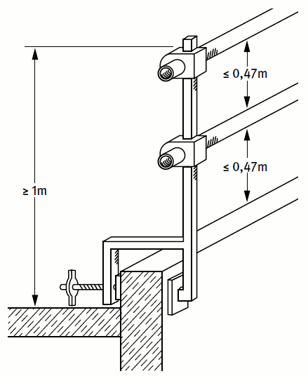
Abb. 5 Beispiel für Seitenschutz an der Dachkante mit Gerüstrohren
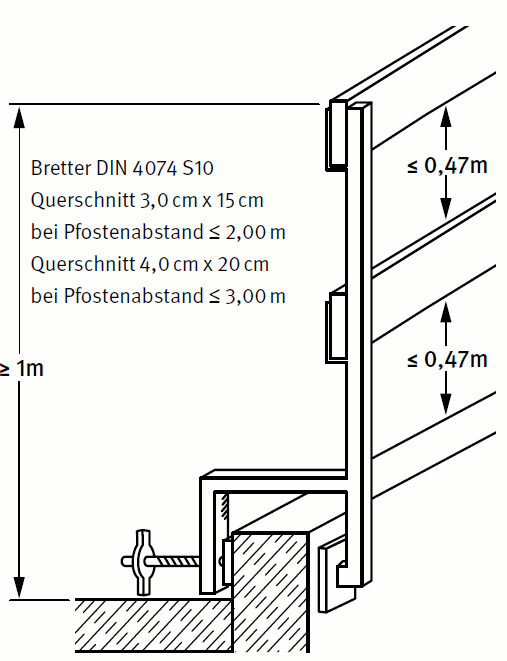
Abb. 6 Beispiel für Seitenschutz an der Dachkante mit Gerüstbrettern
Siehe
Beispiele für Seitenschutz sind in Abbildungen 5 bis 10 dargestellt.
Beispiele für Randsicherungen sind in Abbildungen 11 bis 12 dargestellt.
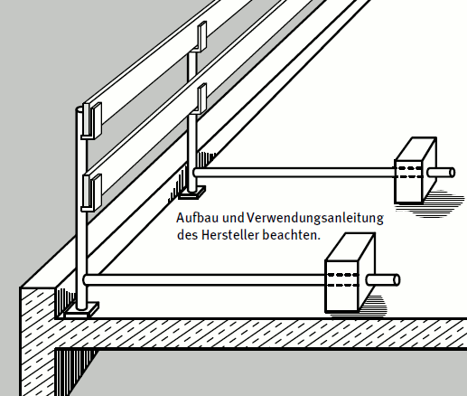
Abb. 7 Beispiel für Flachdachsicherungssystem
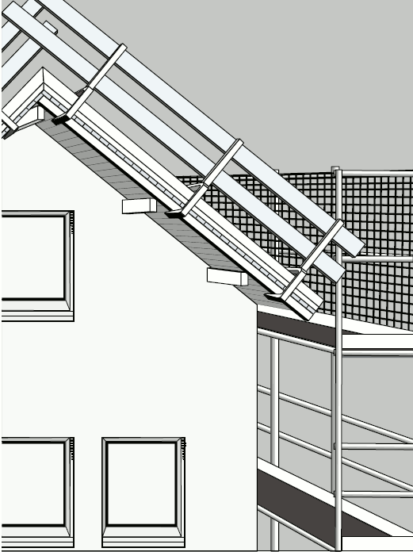
Abb. 8 Beispiel für Seitenschutz am Ortgang
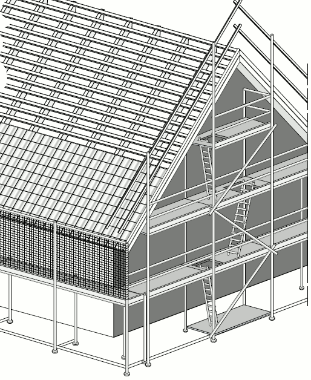
Abb. 9 Beispiel für Seitenschutz am Ortgang in Verbindung mit einem Standgerüst
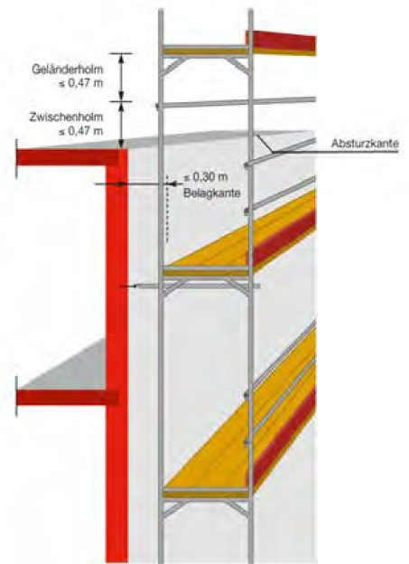
Abb. 10 Beispiel für Absturzsicherungen am Flachdach in Verbindung mit einem Standgerüst
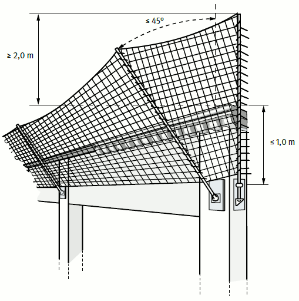
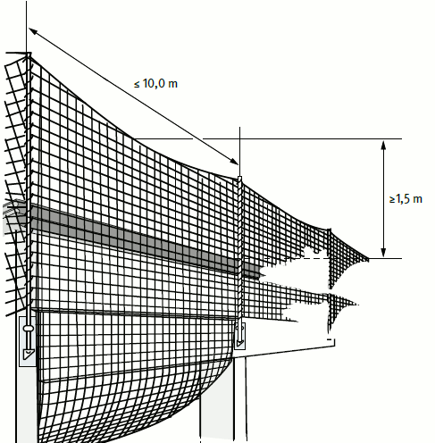
Abb. 11 und 12 Beispiel für Randsicherungen
Können aus arbeitstechnischen Gründen Seitenschutz oder Randsicherung nach Abschnitt 3.3.2 nicht verwendet werden, müssen an deren Stelle Fanggerüste oder Schutznetze vorhanden sein. Der Höhenunterschied zwischen Absturzkante bzw. Arbeitsplatz oder Verkehrsweg und Gerüstbelag oder Schutznetz ist so gering wie möglich auszubilden.
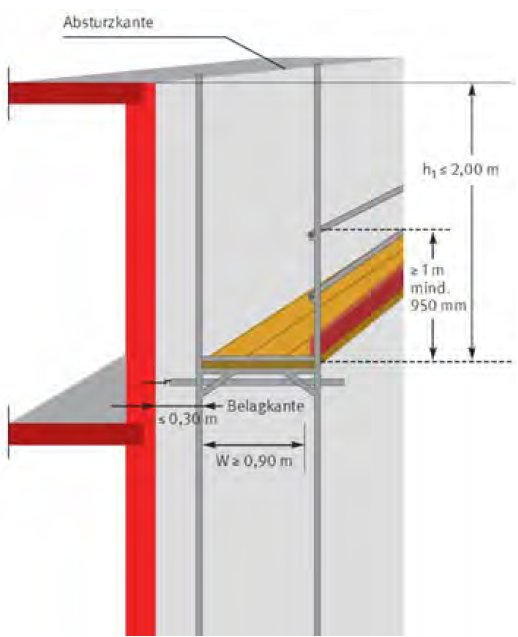
Abb. 13 Beispiel für ein Fanggerüst
Bei der Verwendung von Stand-, Ausleger- Konsol- und Hängegerüsten darf der Höhenunterschied nicht mehr als 2,00 m betragen. Schutznetze sind möglichst dicht unterhalb der zu sichernden Arbeitsplätze aufzuhängen. Die maximal möglichen Absturzhöhen in der DGUV Information 201-058 "Einsatz von Schutznetzen" beziehen sich nur auf die Eigenschaften des Schutznetzes nach DIN EN 1263 Teil 1, die es ermöglichen eine Person aus einer Höhe von maximal 6 m bzw. 3 m im Randbereich aufzufangen.
Arbeitsplattformnetze, die planmäßig begangen werden können, sind so zu montieren, dass die zulässige Absturzhöhe in das Arbeitsplattformnetz 2,0 m nicht überschreitet.
Müssen vorgegebene Absturzhöhen aus staatlichen und oder berufsgenossenschaftlichem Recht eingehalten werden, so sind Maßnahmen zu treffen, die die Absturzhöhe in das Netz reduzieren oder gegebenenfalls andere Maßnahmen zu treffen.
Arbeitstechnische Gründe können z. B. vorliegen, wenn Arbeiten an der Absturzkante durchgeführt werden müssen, die das Anbringen von Seitenschutz nicht ermöglichen.
Siehe
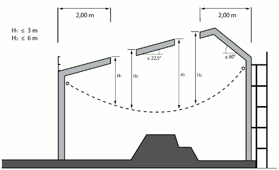
Abb. 14 Maximale Absturzhöhen in ein Schutznetz System S
Bei Arbeiten auf einer Dachfläche mit einer Neigung > 22,5° bis ≤ 60° und einer möglichen Absturzhöhe von mehr als 2,00 m müssen Dachfanggerüste oder Dachschutzwände vorhanden sein (siehe Abb. 15 und Abb. 16).
Siehe
Dachschutzwände können im Regelfall nur eingesetzt werden, wenn keine Arbeiten an der Traufe ausgeführt werden müssen.
Dachschutzwände sind nach der Aufbau- und Verwendungsanleitung des Herstellers zu verwenden.
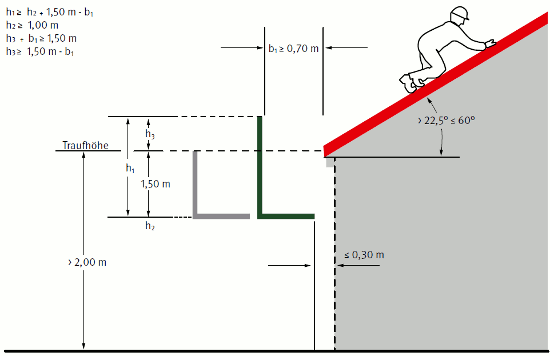
Abb. 15 Dachfanggerüst an geneigter Dachfläche h1 ≥ h + 1,5 – b1 oder h2 + b1 ≥ 1,5 und h1 ≥ 1,0 (alle Maße in m)
Beträgt der Höhenunterschied zwischen Arbeitsplatz und Auffangeinrichtung bei einer Dachneigung von größer 22,5° bis 60° mehr als 5,00 m, müssen zusätzliche Dachschutzwände zum Auffangen abrutschender Personen vorhanden sein (siehe Abbildungen 16 und 17).
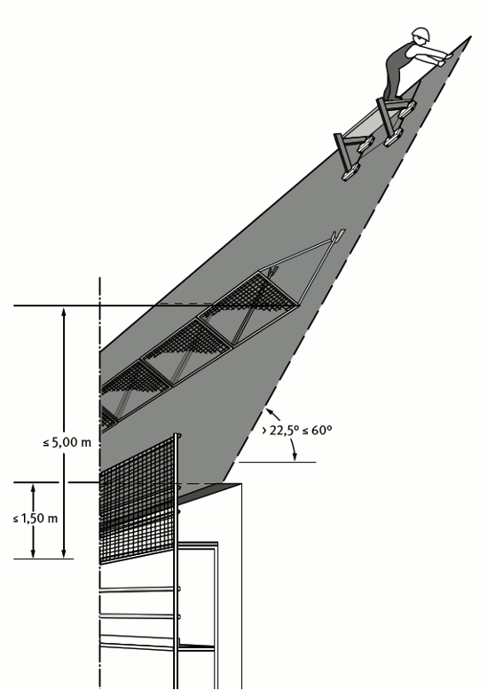
Abb. 16 Absturzsicherung auf geneigter Dachfläche mit Schutzwänden
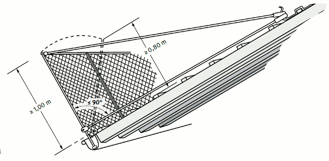
Abb. 17 Dachschutzwand
Werden Dachfanggerüste oder Dachschutzwände als Absturzsicherung bzw. Auffangeinrichtungen verwendet, müssen diese Einrichtungen den Arbeitsbereich seitlich um mindestens 1,0 m überragen (Abbildung 18).
Siehe
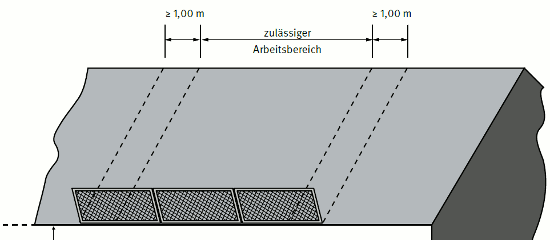
Abb. 18 Zulässiger Arbeitsbereich bei Dachschutzwänden
Können aus arbeitssicherheitstechnischen Gründen und baulichen Gegebenheiten
nicht verwendet werden, kann unter Berücksichtigung der Bewertung der Gefährdung nach Art und Dauer der Tätigkeit entsprechend der TRBS 2121, 3.3 Persönliche Schutzausrüstungen (PSA gegen Absturz) verwendet werden, wenn geeignete Anschlageinrichtungen vorhanden sind.
Dabei hat der Unternehmer oder der fachlich geeignete Vorgesetzte nach Abschnitt 2.3.1 die Eignung der PSA gegen Absturz für die auszuführenden Arbeiten festzustellen, Anschlageinrichtungen festzulegen und dafür zu sorgen, dass die Ausrüstung benutzt wird.
Siehe
Anschlageinrichtungen sind z. B. dann geeignet, wenn sich das befestigte Auffangsystem nicht von der Anschlageinrichtung lösen kann und die Tragfähigkeit für eine Person nach den technischen Baubestimmungen für eine Kraft von 9 kN eingeleitet in die Konstruktion durch den Auffangvorgang, einschließlich den für die Rettung anzusetzenden Lasten (z. B. Gewicht der aufgefangenen Person), nachgewiesen ist. Für jede weitere Person ist die Kraft um 1 kN bzw. sind die Lasten entsprechend zu erhöhen.
Anschlagmöglichkeiten auf geneigten Dachflächen sind z. B. Sicherheitsdachhaken nach DIN EN 517.
Anschlagmöglichkeiten auf Dachflächen ≤ 22,5° Neigung sind z. B. Anschlageinrichtungen, die entsprechend der Einbauanleitung des Herstellers dauerhaft montiert sind (siehe Abbildung 19).
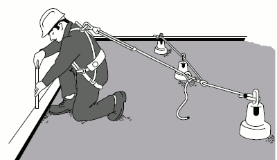
Abb. 19 PSA gegen Absturz bei Dacharbeiten
Die Verwendung der Persönlichen Schutzausrüstung gegen Absturz setzt eine besondere Gefährdungsbeurteilung voraus und bedingt eine gesonderte Unterweisung einschließlich praktischer Übungen der Beschäftigten in der ordnungsgemäßen Benutzung der PSA gegen Absturz, welche auch die Durchführung der erforderlichen Rettungsmaßnahmen nach dem Auffangvorgang beinhaltet.
Auf Seitenschutz, Randsicherung, Fanggerüst ,Schutznetz oder PSA gegen Absturz darf verzichtet werden, wenn Arbeitsplätze oder Verkehrswege auf Flächen mit weniger als 22,5° Neigung liegen und in mindestens 2,00 m Abstand von der Absturzkante fest abgesperrt sind.
Siehe § 12 Abs. 5 der DGUV Vorschrift 38/39 "Bauarbeiten"
Absperrungen können z. B. durch Geländer, Ketten oder Seile erstellt werden. Flatterbänder (Absperrbänder/Trassierbänder) sind keine Absperrmittel.
Auf Seitenschutz, Fanggerüst, Schutznetz oder PSA gegen Absturz darf verzichtet werden, wenn Arbeiten ausgeführt werden, deren Eigenart und Fortgang die vorgenannten Sicherungseinrichtungen nicht zulassen. Dabei ist die Zeitspanne für Tätigkeiten, bei denen Absturzgefahr besteht, so kurz wie möglich zu halten.
Die Arbeiten dürfen nur von fachlich qualifizierten und körperlich geeigneten Beschäftigten ausgeführt werden. Der Arbeitgeber hat für den begründeten Ausnahmefall eine zusätzliche Unterweisung durchzuführen. Die Absturzkante muss für die Beschäftigten deutlich erkennbar sein.
Zu diesen Arbeiten zählen z. B.:
Fachlich geeignet ist z. B., wer Gefahren erkennen, beurteilen und abwenden kann. Dies sind z. B. auch Zimmerer, Dachdecker und Monteure mit abgeschlossener Ausbildung.
Körperlich geeignet sind z. B. Beschäftigte, bei denen keine gesundheitlichen Bedenken für Arbeiten mit Absturzgefahr bestehen.
An Öffnungen in Böden, Decken und Dachflächen müssen Einrichtungen vorhanden sein, die ein Abstürzen, Hineinfallen oder Hineintreten von Personen verhindern.
Siehe
Als Öffnungen gelten
Kanten größerer Öffnungen gelten als Absturzkanten und sind nach Abschnitt 3.3 zu sichern.
Gelattete Dachflächen nach Abschnitt 3.1.7 für Dachziegel oder Dachsteindeckung gelten als geschlossene Dachfläche, wenn der lichte Abstand der Dachlatten nicht mehr als 0,4 m beträgt und die Dachneigung nicht kleiner als 22,5° ist.
Siehe auch Regeln des Zentralverbandes des "Deutschen Dachdeckerhandwerkes" (ZVDH).
Ein Abstürzen, Hineinfallen oder Hineintreten wird verhindert, wenn die Öffnungen
Wenn die oben genannten Maßnahmen aus technischen oder baulichen Gegebenheiten nicht umzusetzen sind, können
Abdeckungen mit Brettern und Bohlen auf nicht durchsturzsicheren Bauteilen müssen mindestens der Sortierklasse S 10 nach DIN 4074-1 entsprechen und nach Tabelle 4 bemessen sein.
Eingebaute, nicht durchsturzsichere Lichtkuppeln, Lichtbänder oder Rauchabzugsklappen gelten als Öffnungen und sind gegen Absturz zu sichern, z. B. durch Seitenschutz, siehe Abschnitt 3.3.2, Schutzabdeckungen nach Abschnitt 3.6.2, Schutznetzabdeckungen oder Schutznetzunterspannungen nach Abschnitt 3.6.1.